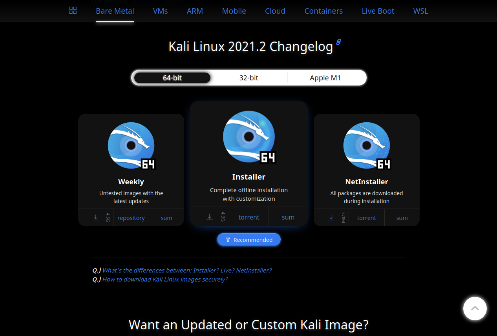

How to download Kali Linux 2021.1 Latest Version ISO Disk Image File?
- Step 1:
Go to the Link here:
- Step 2:
You will see Various types like 64bit or 32bit. Download according to your systems processor.
Then it will start downloading. And it's done.
